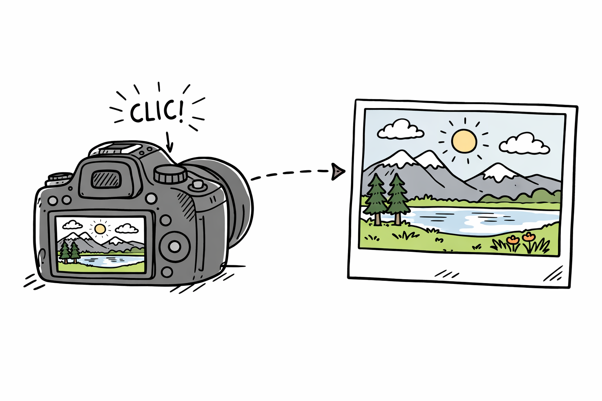
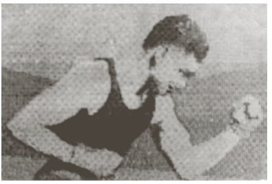
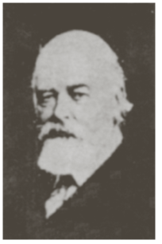
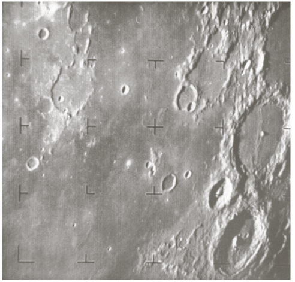
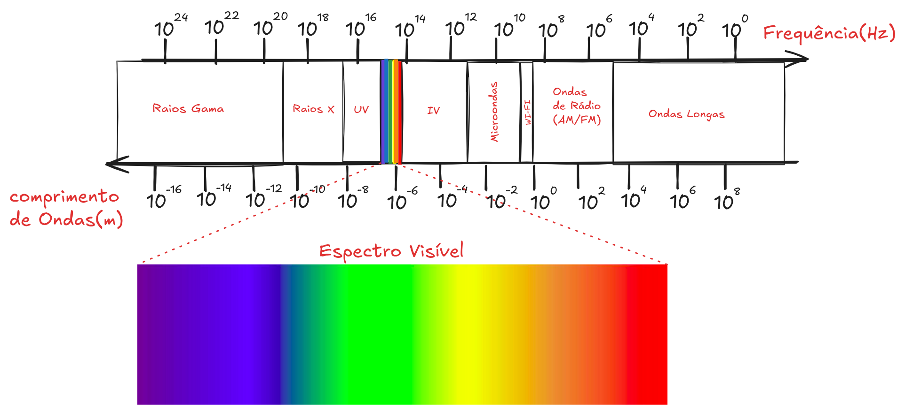
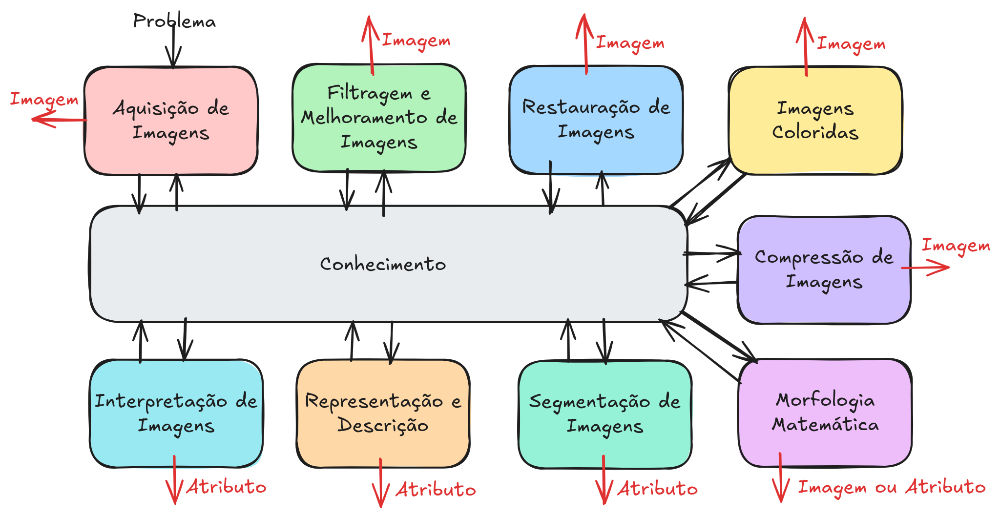

1 Introdução ao Processamento Digital de Imagens

1.1 Apresentação
Um curso sobre Processamento Digital de Imagens (PDI) integra a formação em Ciência da Computação e tem como objetivo estudar técnicas computacionais para aquisição, representação, transformação e interpretação de imagens digitais. Ao longo do curso, o estudante será introduzido aos fundamentos teóricos e práticos que permitem extrair informações relevantes de imagens por meio de algoritmos implementados em computadores digitais.
O processamento de imagens é uma área multidisciplinar, com aplicações que vão desde sistemas simples de melhoria visual até sistemas complexos de reconhecimento automático, análise de cenas e apoio à tomada de decisão.
1.2 O que é uma Imagem Digital
Uma imagem pode ser definida matematicamente como uma função bidimensional \(f(x,y)\), em que \(x\) e \(y\) representam coordenadas espaciais em um plano, e o valor de \(f(x,y)\) corresponde à intensidade luminosa ou nível de cinza naquele ponto.
Quando as coordenadas espaciais e os valores de intensidade assumem valores discretos e finitos, a imagem é denominada imagem digital. Nesse contexto, uma imagem digital é formada por um conjunto finito de elementos organizados em uma grade, chamados de pixels (picture elements), sendo cada pixel identificado por sua posição \((x,y)\) e por um valor associado de intensidade.
O Processamento Digital de Imagens refere-se, portanto, ao conjunto de técnicas computacionais aplicadas sobre essas imagens digitais com o objetivo de melhorar sua qualidade, extrair informações ou permitir sua interpretação automática.
1.3 Processamento de Imagens, Análise de Imagens e Visão Computacional
O PDI está intimamente relacionado a outras duas áreas: Análise de Imagens e Visão Computacional. Embora relacionadas, essas áreas possuem focos distintos:
- Processamento de Imagens: concentra-se na transformação da imagem, tendo como saída outra imagem (por exemplo, redução de ruído ou melhoria de contraste).
- Análise de Imagens: busca extrair atributos e descrições relevantes dos objetos presentes na imagem.
- Visão Computacional: tem como objetivo final atribuir significado às imagens, simulando aspectos da percepção visual humana.
Esses processos podem ser organizados em três níveis:
- Nível baixo: operações básicas, como filtragem de ruído e realce de contraste;
- Nível médio: segmentação e descrição de objetos;
- Nível alto: interpretação e reconhecimento, ou seja, “dar sentido” aos objetos detectados.
1.4 Origem e Evolução do Processamento Digital de Imagens
Os primeiros registros associados ao processamento de imagens remontam ao início do século XX. Em 1921, imagens foram transmitidas entre Londres e Nova York por meio de cabos submarinos, reduzindo drasticamente o tempo de envio de fotografias. Posteriormente, técnicas como o uso de fitas perfuradas permitiram melhorias manuais nas imagens recebidas.
Na década de 1960, o avanço do PDI esteve fortemente ligado à corrida espacial, com o uso de computadores para melhorar imagens capturadas por sondas espaciais, como as primeiras imagens digitais da Lua. Já na década de 1970, a área ganhou grande impulso na medicina, com o surgimento da tomografia computadorizada, que possibilitou a reconstrução de imagens internas do corpo humano a partir de dados capturados por sensores.

A imagem da Figura 1.1, por exemplo, representa o nascimento do envio remoto de informação visual. Ao ser transmitida por telégrafo nos experimentos de Arthur Korn (1902-1907), ela se tornou o primeiro exemplo prático de como uma imagem analógica poderia ser decomposta e reconstruída através de sinais elétricos. Documentalmente, esta foto é o ponto de partida para o estudo da fidelidade na transmissão de dados, tema central na evolução do processamento digital.

Já a imagem da Figura 1.2 é o retrato de Lord Kelvin (William Thomson), que representa um salto tecnológico fundamental na decodificação e transmissão de imagens: o uso do código Morse de 5 unidades e fita perfurada para transmitir imagens pelo cabo transatlântico em 1922 (sistema Bartlane).
Diferente da primeira (de Arthur Korn), que era analógica e baseada em células de selênio, esta marca o início da digitalização de imagens. A foto foi decomposta em 5 tons de cinza, cada um representado por uma combinação de furos na fita.
A imagem da Figura 1.3 (Marechal Foch e o General Pershing) representa um marco evolutivo crucial no Sistema Bartlane, por volta de 1929. Enquanto a foto anterior de Lord Kelvin usava apenas 5 níveis de cinza, esta transmissão elevou a fidelidade para 15 ou 16 tons de cinza, aproximando-se muito mais de uma fotografia convencional.

A imagem da Figura 1.4 é, por fim, um marco histórico monumental: ela faz parte das primeiras fotos da Lua transmitidas pela sonda Ranger 7, da NASA, em 31 de julho de 1964.
Diferente das transmissões anteriores (Korn e Bartlane), que eram experimentos de comunicação terrestre, esta representa o nascimento do Processamento Digital de Imagens moderno. As fotos foram capturadas por câmeras de vídeo de varredura (vidicon) e transmitidas via rádio como sinais analógicos, que a NASA então converteu em dados digitais para “limpar” e realçar as crateras.
1.5 Imagens e o Espectro Eletromagnético
As imagens utilizadas em PDI não se limitam à luz visível. Elas podem ser obtidas em diferentes faixas do espectro eletromagnético, incluindo:
- raios gama e raios X (aplicações médicas e industriais),
- ultravioleta (análise de materiais e superfícies),
- visível (fotografia, vigilância, inspeção),
- infravermelho (sensoriamento térmico e satélites),
- micro-ondas e ondas de rádio (radar, ressonância magnética),
- imagens sísmicas e microscopia eletrônica.
Essa diversidade amplia significativamente o campo de aplicações do processamento digital de imagens.

1.6 Passos Fundamentais do Processamento Digital de Imagens
De forma geral, um sistema de PDI envolve etapas fundamentais como:
- Aquisição da imagem por sensores;
- Pré-processamento, incluindo realce e restauração;
- Segmentação, para separar objetos de interesse;
- Representação e descrição, por meio de atributos;
- Reconhecimento e interpretação, apoiados por uma base de conhecimento.
Essas etapas são suportadas por componentes como sensores de imagem, hardware especializado, software de processamento, sistemas de armazenamento e dispositivos de visualização.

O processamento digital de imagens pode ser entendido como uma sequência de etapas interligadas, nas quais uma imagem de entrada é transformada progressivamente até gerar outra imagem ou informações (atributos) relevantes, conforme ilustrado na Figura 1.5. No início do fluxo está a aquisição de imagens, cuja entrada é um fenômeno do mundo real (o “problema”) e cuja saída é uma imagem digital. Essa etapa envolve sensores (como câmeras ou scanners) e processos de digitalização, convertendo sinais físicos em dados numéricos que podem ser manipulados computacionalmente.
Em seguida, a imagem adquirida pode passar pela filtragem e melhoramento de imagens, cuja entrada e saída são ambas imagens. O objetivo aqui é tornar a imagem mais adequada para análise ou visualização, reduzindo ruídos, ajustando contraste, destacando bordas ou corrigindo imperfeições. Essa etapa não altera o conteúdo semântico da imagem, mas melhora sua qualidade para as etapas seguintes.
A restauração de imagens também recebe uma imagem como entrada e produz uma imagem como saída, porém com uma abordagem mais fundamentada em modelos matemáticos. Diferentemente do melhoramento (que é mais heurístico), a restauração busca recuperar a imagem original a partir de uma versão degradada, considerando modelos de ruído, desfoque ou distorções introduzidas durante a aquisição.
A etapa de imagens coloridas trata da representação e manipulação de imagens em diferentes espaços de cor. Aqui, tanto a entrada quanto a saída são imagens, mas com transformações que podem alterar a forma como a informação de cor é representada (por exemplo, RGB, HSV, etc.), facilitando tarefas específicas como segmentação ou realce de características.
Na compressão de imagens, a entrada é uma imagem, e a saída também é uma imagem, porém codificada de forma mais eficiente, reduzindo o espaço de armazenamento ou o custo de transmissão. Essa etapa pode ser sem perdas (mantendo a qualidade original) ou com perdas (aceitando alguma degradação em troca de maior compressão).
A segmentação de imagens representa um ponto de transição importante: sua entrada é uma imagem, mas sua saída são atributos (ou estruturas derivadas), como regiões, objetos ou máscaras que identificam partes relevantes da imagem. O objetivo é particionar a imagem em componentes significativos, facilitando análises posteriores.
Na representação e descrição, a entrada são esses atributos ou regiões segmentadas, e a saída continua sendo atributos, agora organizados de forma estruturada (como vetores de características, contornos, descritores de forma ou textura). Essa etapa traduz a informação visual em dados quantitativos que podem ser utilizados por algoritmos.
A interpretação de imagens utiliza como entrada esses atributos e produz como saída atributos de alto nível, como rótulos, classes ou decisões (por exemplo, identificar objetos ou reconhecer padrões). Trata-se de uma etapa mais próxima da inteligência artificial, onde o sistema atribui significado à imagem.
Por fim, a morfologia matemática pode atuar tanto sobre imagens quanto sobre atributos, produzindo como saída imagens ou atributos. Essa etapa utiliza operações baseadas em conjuntos (como dilatação, erosão, abertura e fechamento) para analisar e modificar estruturas geométricas, sendo amplamente usada em pré-processamento, segmentação e refinamento de resultados.
Todas essas etapas são integradas por uma base de conhecimento, que orienta as escolhas de métodos, parâmetros e estratégias ao longo do processamento. Esse conhecimento pode incluir modelos matemáticos, regras heurísticas ou aprendizado a partir de dados, permitindo adaptar o sistema a diferentes problemas e aplicações.
1.7 Organização do Livro
Este livro abordará os conceitos fundamentais do Processamento Digital de Imagens, estabelecendo as bases matemáticas, computacionais e conceituais necessárias para disciplinas mais avançadas, como visão computacional e aprendizado de máquina aplicado a imagens. Ao final, espera-se que o aluno seja capaz de compreender, implementar e analisar algoritmos básicos de PDI, reconhecendo suas aplicações práticas em diferentes áreas do conhecimento.